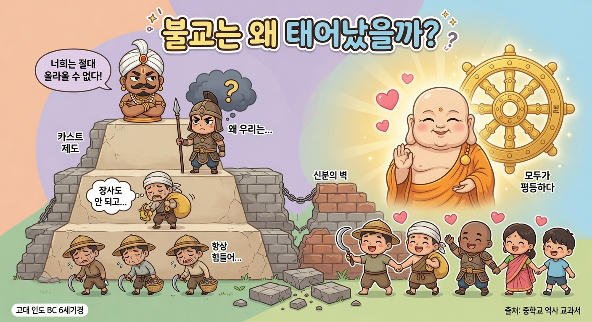
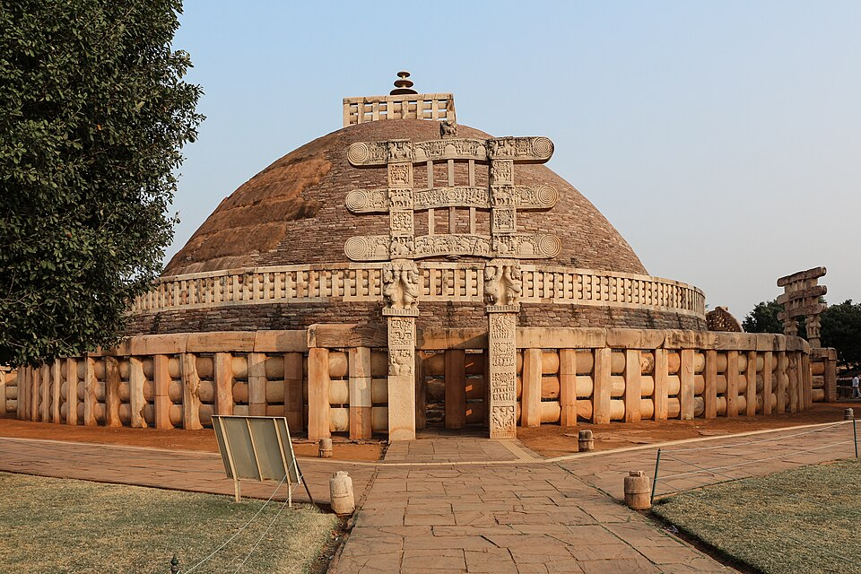
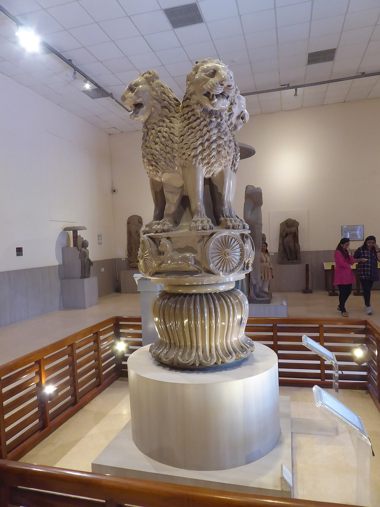
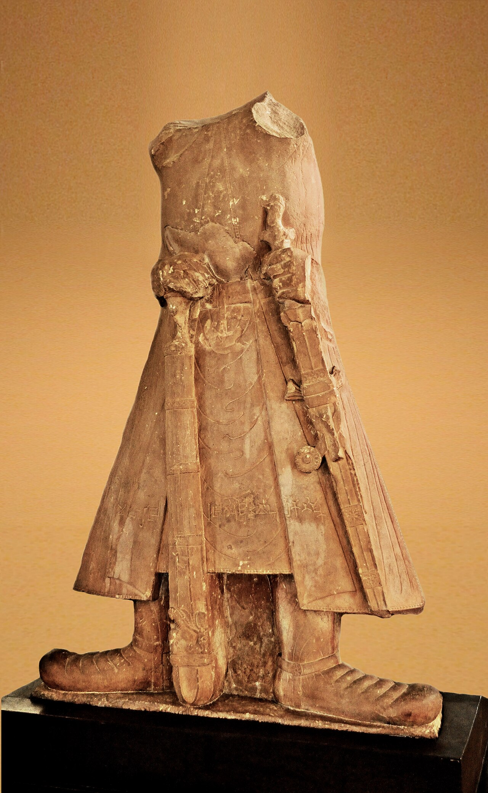
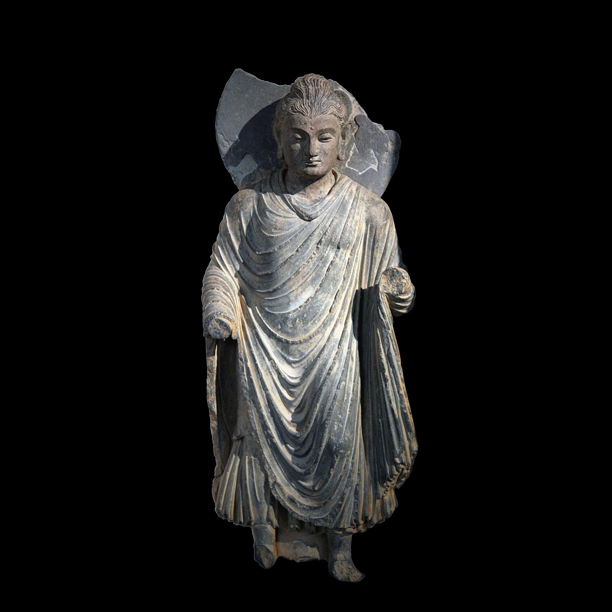
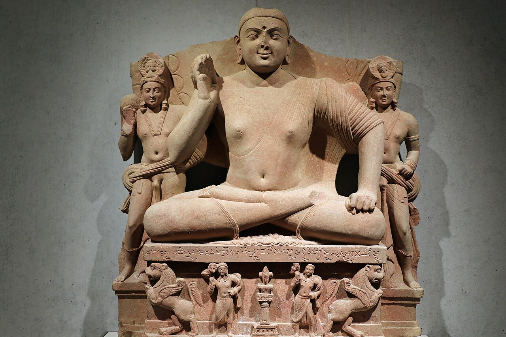
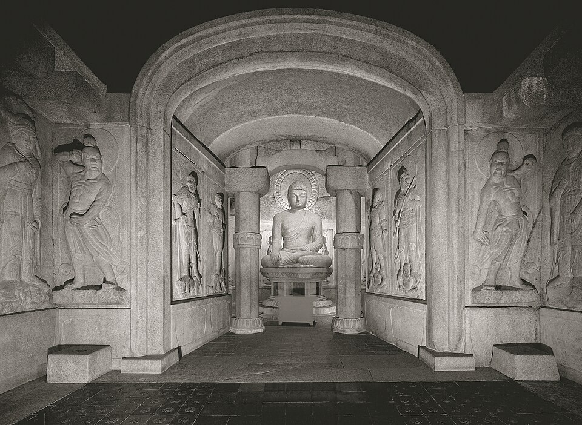
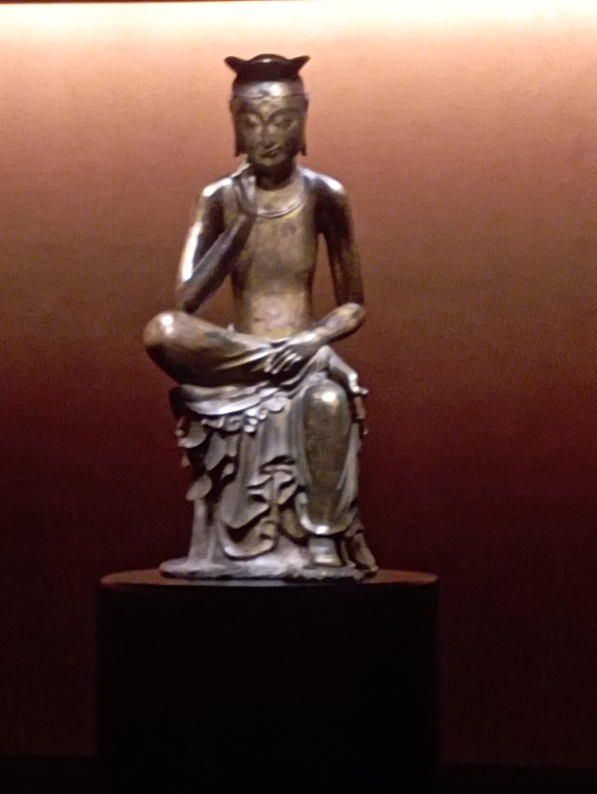

불교의 탄생부터, 부처가 그리스 얼굴이 된 사건, 그리고 그 길이 우리 석굴암까지 온 이야기
📖 Ⅱ. 문명의 발생과 고대 세계의 형성 — 고대 인도 세계가 형성되다
📄 종이 학습지(빈칸·표)는 선생님이 나눠준 인쇄물로 풀어요. 이 화면은 그 학습지를 풀 때 같이 보는 컬러 유물 사진관이에요. 흑백 교과서 사진을 진짜 색으로 다시 만나 보세요.
🎙️자, 교과서 56쪽 그 불상 사진. 흑백이라 잘 안 보이지? 사실 그 부처, 얼굴이 그리스 사람처럼 생겼어. 왜 그럴까? 스크롤하면서 진짜 유물로 따라가 보자.
1불교는 왜 생겼을까 — 카스트
기원전 7세기, 갠지스강 유역엔 도시 국가들이 다투며 농업·상업이 커졌어요. 그런데 사회는 4개 신분으로 꽉 묶여 있었죠.

한 컷으로 보는 “불교는 왜 태어났을까?”
왼쪽 — 신분의 벽에 갇혀 답답해하는 무사(크샤트리아)·상인(바이샤)·농민(수드라). 위에선 브라만이 “너희는 절대 못 올라와!”. 오른쪽 — “모두가 평등하다”고 가르치는 부처와 법륜(가르침의 수레바퀴). 바로 이 메시지가 답답했던 사람들의 마음을 움직였어요.
🎨 이해를 돕는 일러스트 (AI 생성) · 진짜 유물 사진은 2번부터예요
브라만 — 제사장
크샤트리아 — 왕·무사
바이샤 — 농민·상인
수드라 — 노예·천민
▲ 브라만교의 카스트(신분제). 위로 갈수록 좁고 높은 신분.
💡 반전: 정치·군사를 맡은 크샤트리아와 생산을 맡은 바이샤는 돈·힘이 커졌는데도 브라만 아래였어요. 불만이 쌓였죠. 그때 석가모니(고타마 싯다르타)가 “신분 차별은 틀렸다, 누구나 평등하다”고 외치자 — 이 두 세력이 불교를 밀어줬어요. 욕심을 버리고 바르게 수행하면 윤회의 고통에서 벗어나 해탈한다는 가르침이었죠.
2마우리아 왕조 — 인도를 처음 하나로
찬드라굽타가 북인도를 처음 통일하고, 아소카왕(기원전 3세기)이 남부만 빼고 거의 다 통일했어요. 아소카는 불교를 적극 밀어줬죠.

산치 대탑 (Great Stupa, 산치)
아소카왕 시대에 세운 거대한 반구형 불탑. 안에 부처의 사리를 모시고, 둘레의 탑문(토라나)엔 부처의 일생이 빼곡히 조각돼 있어요.
📷 Wikimedia Commons — “Stupa 1, Sanchi” · CC
💡 부처를 사람 모습으로 안 새기고, 보리수·바퀴·발자국 같은 상징으로만 표현하던 시절의 대표작이에요. (이게 곧 바뀝니다 → 4번)

아소카 석주의 사자상 (사르나트)
아소카왕은 전국에 가르침을 새긴 돌기둥(석주)을 세웠어요. 그 꼭대기를 장식한 네 마리 사자.
📷 사르나트 박물관 소장 · Wikimedia Commons · CC
💡 반전: 이거 어디서 봤다고? 오늘날 인도의 국가 상징(국장)이에요. 인도 지폐·여권에 다 있어요. 사자 아래 바퀴(법륜)는 인도 국기 한가운데 그 파란 바퀴랍니다.
3쿠샨 왕조 — 유목민이 세운 무역 제국
마우리아가 무너지고 인도가 쪼개지자, 1세기경 이란 계통 유목민이 쿠샨 왕조를 세워요. 중국~인도~서아시아를 잇는 중계무역으로 부자가 됐죠.

카니슈카왕 상 (쿠샨 전성기)
쿠샨의 전성기를 이끈 카니슈카왕(2세기 중엽). 머리는 깨졌지만 몸을 보세요.
📷 마투라 박물관 소장 · Wikimedia Commons · CC
💡 긴 외투·장화·허리에 찬 칼 — 인도 사람 옷이 아니죠? 추운 초원에서 말 타던 유목민 복장이에요. 쿠샨이 어디서 왔는지 옷이 다 말해줍니다.
4간다라 양식 — 부처가 그리스 얼굴이 된 사건 ⭐
알렉산드로스의 동방 원정으로 인도 서북부에 헬레니즘(그리스) 문화가 들어왔어요. 그리스 조각 기술 + 인도 불교 = 간다라 양식. 같은 시기 인도 본토의 마투라 양식과 비교해 보세요.

간다라 · 그리스풍
간다라 불상
물결치는 곱슬머리, 토가처럼 흘러내리는 옷주름, 오뚝한 콧날 — 그리스 신상을 꼭 닮았죠.
📷 기메 박물관(파리, MA 6284) · Wikimedia · CC

마투라 · 인도풍
마투라 불상
붉은 사암, 둥글고 환한 얼굴, 몸에 착 붙는 얇은 옷 — 인도가 자기 방식으로 만든 부처예요.
📷 킴벨 미술관 소장 · Wikimedia · CC
🎙️그런데 왜 갑자기 부처를 사람 얼굴로 만들기 시작했을까? 원래 불교는 부처를 보리수·바퀴·발자국 같은 상징으로만 표현했어. 그런데 대승 불교가 부처를 “많은 중생을 구원하는 숭배 대상”으로 모시면서, 그리스 신상처럼 사람 모습으로 조각하기 시작한 거야. 그게 간다라에서 처음 터진 거지.
5그래서, 이게 너랑 무슨 상관? — 실크로드의 끝, 우리나라 ⭐
간다라에서 태어난 사람 모습 부처는 대승 불교와 함께 실크로드를 타고 중국 → 한국 → 일본으로 흘러갔어요. 그 여정의 한국 걸작 둘.

한국 · 통일신라
경주 석굴암 본존불
화강암을 깎아 만든 석굴 사원의 부처. 수학여행에서 봤을지도?
📷 Wikimedia Commons · CC

한국 · 삼국시대
금동미륵보살반가사유상 (국보 78호)
국립중앙박물관 ‘사유의 방’의 그 불상. 생각에 잠긴 미소가 유명하죠.
📷 국립중앙박물관 소장 · Wikimedia · CC
🎙️경주 석굴암, 국립중앙박물관 ‘사유의 방’… 박물관·수학여행에서 본 그 불상들의 먼 조상이 2천 년 전 간다라에 있었던 거야. 그리스 → 인도 → 중국 → 한국. 부처 얼굴 하나가 지구 반 바퀴를 돈 셈이지.
한 줄 정리
불교는 평등을 외치며 태어났고(인도), 부처는 그리스 얼굴을 얻어(간다라), 실크로드를 타고 우리에게까지 왔다.